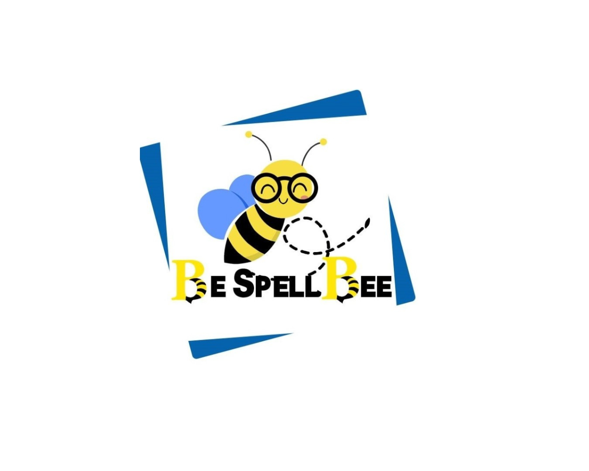

BeSpellBee is a premier digital platform for high-achieving lower and uppper secondary students.
Beyond our collaborative live lessons, we provide a sophisticated Learning Management System (LMS)
featuring original interactive activities and quizzes.
What makes us different?
We also offer cultural workshops (debate, literature, art, and more) to develop
critical thinking and creativity – because education is not just about grades, but about building
confident, curious minds.
Every student action – from link clicks and page views to quiz attempts and lesson completions –
is broadcast live to teachers via WebSocket. Our system scientifically calculates an
Engagement Score based on real‑time participation and performance, allowing
us to deliver tailored coaching and assistance that adapts to each student’s needs.